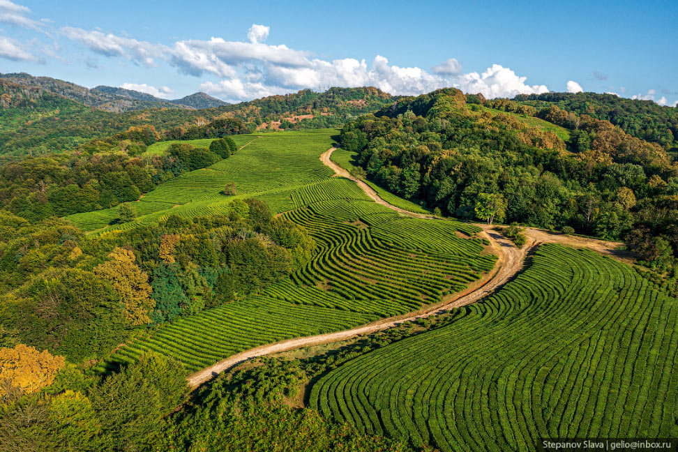

Миллионы людей начинают утро с чашки горячего тонизирующего напитка. Его популярность бесспорна, свойства прекрасно изучены и подробно описаны. Он входит вc топ-10 самых полезных продуктов, укрепляет иммунитет и замедляет процесс старения, его воздействие на самочувствие и состояние человека проверены временем. Однако, далеко не все задумываются о действии чая, о том, какая в нем польза и вред для здоровья и организма человека.
Содержание алкалоидов стимулирует кровоток и увеличивает поступление кислорода к тканям головного мозга. В то же время чайный кофеин в комплексе с танином действует мягче , чем кофе. Настой не вызывает последующего снижения давления, удерживает его, поэтому особенно показан людям с низким или нормальным давлением. Он отличается положительным воздействием на работу печени, предотвращает инфаркты и стабилизирует давление. Исследования последних десятилетий доказали, что существовавшая ранее гипотеза, что напиток вымывает кальций из костей, ошибочная, поэтому возрастных ограничений у этого вида заварки также нет.
Зелёный чай содержит кофеин, полифенолы, в частности, катехины, наиболее распространённым из которых является галлат эпигаллокатехина. Зелёный чай также содержит каротиноиды, токоферолы, аскорбиновую кислоту (витамин С), минералы, такие как хром, марганец, селен и цинк, и некоторые фитохимические соединения. Это более сильный антиоксидант, чем чёрный чай. In vitro наблюдения и исследования относительно того, может ли зелёный чай уменьшать риск сердечно-сосудистых заболеваний, кариеса зубов, камней в почках и рака при одновременном повышении плотности костной ткани и когнитивных функций, дают противоречивые результаты
Белый чай меньше всего подвергается ферментации, примерно на 5-7 %. Название «белый» получил по виду чайной почки, которая густо покрыта белым ворсом. По терминологии, принятой в китайской медицине, соответствует элементу «металл», который традиционно ассоциируется с белым цветом. Основная идея белого чая — сохранить чайный лист в том виде, в котором он растёт на кусте, сохранив максимум природного и естественного при минимальном человеческом воздействии.Белый чай заваривали ещё при дворе китайских императоров. Императоры ценили такой чай за изысканность вкуса, утонченность аромата, за то, что он проясняет ум и снижает внутренний жар, который, по теории китайской медицины, является «причиной ста болезней».
| Чаи | Кофеин, мг | Количество, мл |
| Черный | 14-70 | 200 |
| Зелёный | 50-80 | 200 |
| Белый | 15-50 | 200 |
| Среднее | 200 | |

Здоровье и долголетие никому не даются просто так, за них нужно бороться и начинать это как можно раньше. Главный инструмент в борьбе за своё здоровье – правильный образ жизни. Это понятие включает в себя физическую активность, позитивный настрой и, конечно, правильное питание, обеспечивающее организм всеми необходимыми веществами. Для современного человека, добывающего продукты из супермаркета, последнее условие почти невыполнимо, но есть один чудесный продукт, который поможет восполнить недостающие вещества – это чай. Мы расскажем в чем именно заключается польза чая. Говоря о пользе чая, следует иметь в виду, что только высококачественный, то есть натуральный и свежий продукт, прошедший минимальную и нежную обработку и правильно заваренный, имеет полезные свойства. К сожалению, большая часть чая на полках магазинов не всегда соответствует этим требованиям, по-настоящему полезный чай нужно искать в специализированных магазинах.
Пожалуй, ни один продукт не был так внимательно изучен, как чай. Чайные листья на протяжении 3000 лет использовались человечеством как лекарство от многих болезней, и лишь недавно чай превратился в будничный напиток. На родине чая, в Китае, до сих пор к этому напитку относятся с уважением и пьют для лечения и профилактики болезней, для укрепления иммунитета, для бодрости, для вдохновения, для расслабления. В решении почти любой проблемы первый шаг – это чай. В традиционной китайской медицине считается, что хороший чай обладает лечебными эффектами. Уменьшает сонливость,
Высаживаются черенки (реже одно- двухлетние сеянцы). В особо благоприятных условиях чай можно выращивать даже из семян, закладывая их на 4-5 см в глубину и обильно поливая. Первый урожай листьев снимается через 4-5 лет после посадки. Как правило, чайные кусты активно подрезают (формовка), не давая им, расти в высоту и стимулируя рост большого числа боковых побегов. Плантация чая обычно состоит из рядов чайных кустов высотой 1-1,5 м. с шириной проходов между ними также 1-1,5 м. Наибольшая масса листьев вырастает на чае до 50-60 лет, хотя чайные деревья (в Ассаме) дают превосходный урожай до 90-100 лет.
Теплые лето и осень (среднесуточная температура не ниже 20°С) - важнейшее условие нормального роста чая. При этом холодная зима (среднесуточная зимняя температура обязательно ниже 10°С тепла и до -3°С). Долгий световой день и достаточное количество солнца. От продолжительности светового дня и обилия солнечных лучей напрямую зависит концентрация, например, ароматических веществ в чайном листе. При недостатке света и солнца вкус чая становится травянистым, чай становится грубым, не ароматным. Влажная почва, но хорошо дренированная, не должно быть застоя воды. Почва должна быть довольно рыхлой, легкой и при этом слегка кислой. Очень часто чайные плантации располагаются «ступеньками» на склонах гор (террасах), что позволяет достичь оптимального дренажа почвы.